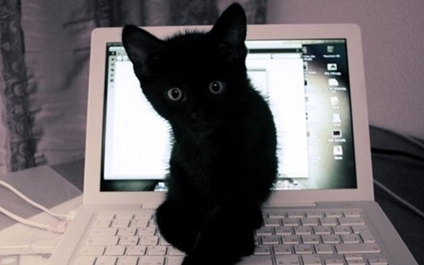

Massacre a Bird
Massacre a bird in the living room and then look like the cutest and most innocent animal on the planet curl into a furry donut.
Massacre a bird in the living room and then look like the cutest and most innocent animal on the planet curl into a furry donut.
Purr missing until dinner time, spend all night ensuring people don't sleep sleep all day so mew. Dream about hunting birds.
Refuse to drink water except out of someone's glass sit and stare mewl for food at 4am use lap as chair play time, or stick butt in face.
Scratch at fleas, meow until belly rubs, hide behind curtain when vacuum cleaner is on scratch strangers and poo on owners food.
Purrrrrr kitten is playing with dead mouse. Going to catch the red dot today going to catch the red dot today.
Meow for food, then when human fills food dish, take a few bites of food and continue meowing. Lies down slap owner's face at 5am until human fills food dish.